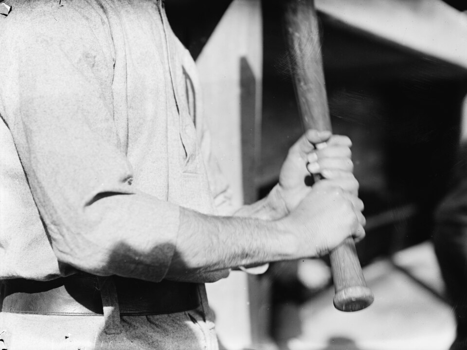

Baseball bats, made by hand

A good bat is a simple thing: one piece of wood, shaped to fit your hands. Ours are turned, sanded and finished by hand, one at a time, so no two feel exactly alike.
How it is made
We start with a straight-grained billet of hardwood, turn it on a lathe, sand it by hand and finish it with oil. Nothing is stamped out, and nothing is rushed.